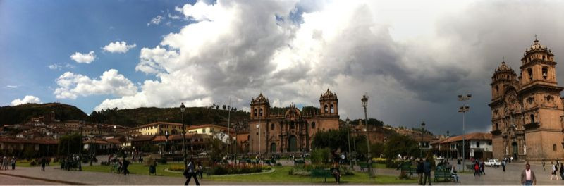

Thu, 07 Oct 2010 22:21:26 · Peru · Cusco · Travel · City · photography
la vista de plaza de armas del cusco taken with

La vista de plaza de Armas del Cusco - taken with my iPhone
Thu, 07 Oct 2010 22:21:26 · Peru · Cusco · Travel · City · photography

La vista de plaza de Armas del Cusco - taken with my iPhone